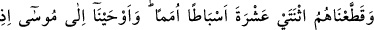
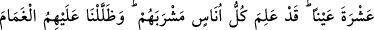
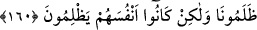
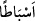
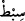

Ey Hakkı! Bu peygamberin yolunu izle de
Maksadın elden kaçmasın
160. Biz İsrailoğullarını oymaklar halinde oniki kabileye ayırdık. Kavmi
kendisinden su isteyince, Musa’ya, “Asânı taşa vur!” diye vahyettik. Derhal ondan
oniki pınar fışkırdı. Her kabile içeceği yeri belledi. Sonra üzerlerine bulutla gölge
yaptık, onlara kudret helvası ve bıldırcın eti indirdik. (Onlara dedik ki) “Size
verdiğimiz rızıkların temizlerinden yeyin.” Ama onlar (emirlerimizi dinlememekle)
bize değil kendilerine zulmediyorlardı.
“Biz onları” yani Mûsâ (a.s.)’ın kavmini, yoksa önceki ayette söz konusu edilen
onlardan bir topluluğu değildir. “on iki torun kabileye” birbirinden ayrı on iki cemaat
veya gruba “ayırdık.”
“”, “çocuğun çocuğu, yani torun” mânâsına gelen “” kelimesinin çoğuludur.
İshâk (a.s.)’ın neslinden gelen topluluğa “sibt”, İsmail (a.s.)’ın neslinden gelen
topluluğa ise “kabile” denir.
İsrâiloğulları’nın on iki kabîleye ayrılması, Yakûb (a.s.)’ın on iki oğlundan
nesillerinin meydana gelmesindendir. Geçimlerinin kolay olması ve işlerinin düzgün
yürümesi için bu şekilde bölünmeleri Allah’ın onlara bir nimetidir. Onlar, birbirlerine
buğzeden ve mutaassıp topluluklardı.
“Kavmi kendisinden” işledikleri kötülükler sebebiyle düştükleri Tîh çölünde son
derece susadıklarında Mûsâ (a.s.)’dan “su isteyince, Mûsâ’ya: “Asânla taşa vur.” diye
vahyettik.” Mûsâ (a.s.)’ın asâsı, cennet ağacından yapılmıştı. Âdem (a.s.) , cennetten
yeryüzüne inerken onu da beraberinde getirmişti. Sırasıyla bütün peygamberler buna
vâris olmuşlar, nihayet Şuayb (a.s.)’a ulaşmıştır. O da onu Mûsâ (a.s.)’a vermiştir.
Ayette söz konusu edilen “taş”ın ne olduğu hususundaki farklı görüşler, Bakara
suresinde geçmişti.
Farsça tefsirde denilmiştir ki: “O taş ki, Tîh sahrasına ulaştığında sana: “Beni yukarı
kaldır, al ki senin işine yararım.” demişti. Sen o taşı yukarı kaldırıp aldın. Şimdi onu
çuvalda tutuyorsun. “Asânı o taşa vur.” diye vahyedildi. Mûsâ (a.s.), asâyı o taşın
üzerine vurdu.